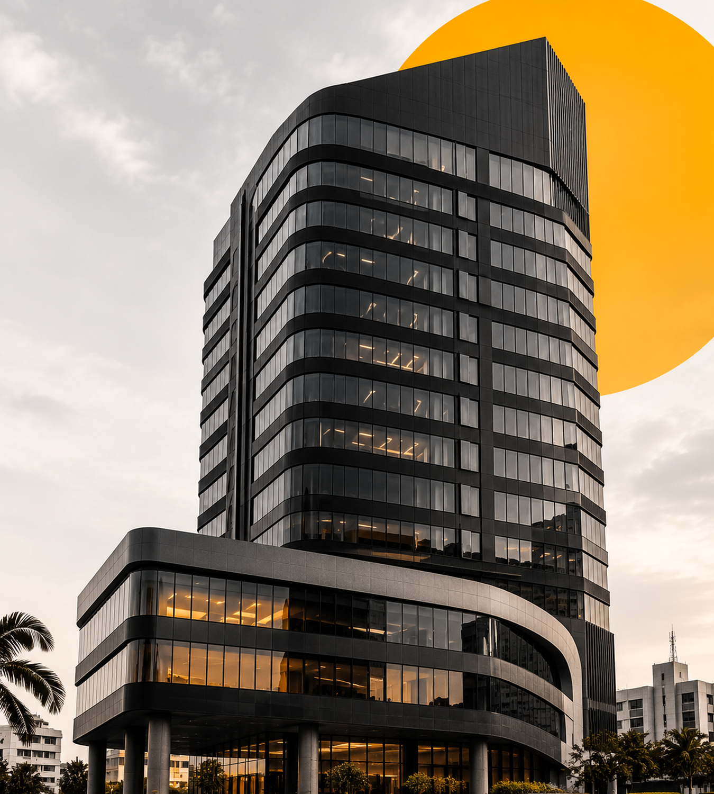

01 / 03
Web
development
Web experiences shaped around clarity, usability and the people they are built to serve.
Discuss this serviceA WEBSITE & AUTOMATION AGENCY
A website and automation agency helping businesses build, streamline and grow.
Thoughtfully engineered
digital experiences.

01 CAPABILITIES
Good digital work should feel clear on the surface and work hard underneath. We bring the visible experience and the invisible systems together.
Web experiences shaped around clarity, usability and the people they are built to serve.
Discuss this serviceThoughtful connections between tools and tasks, so less time gets lost to repetitive work.
Discuss this serviceThe connected foundations that help digital tools, information and everyday operations work together.
Discuss this service02 THE THINKING
From the first impression to the last process in the background, every detail has a job to do. We care about both sides of the experience.
How we approach the work03 OUR APPROACH
Clear thinking before busy work. A considered route from the problem to something useful, dependable and ready to grow.
Start with the real need, the people involved and what a useful result should look like.
Bring structure to the idea. Decide what matters, what connects and what can stay simple.
Turn the direction into a working digital experience, system or workflow.
Pay attention to the small things that make the finished work clearer and more dependable.
04 WHAT GUIDES US
Details are decisions. Make each one count.
Find a more useful way to solve the problem.
Make it clear, make it work, make it dependable.
Good work should make a meaningful difference.
Not more for the sake of more. Just the right things, working well together.
THOUGHTFULLY ENGINEERED DIGITAL EXPERIENCES.05 HAVE SOMETHING IN MIND?
Tell us what you are building, what needs to work better, or where you would like to begin.